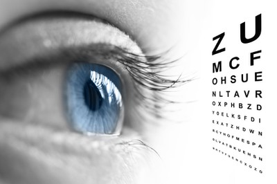

TEST DE VUE ET DIAGNOSTIC DE DALTONISME
|  | |
Nous vous rappelons que ces tests sont conçus qu'en vue de donner une idée générale mais en aucun cas remplace la visite chez un professionnel de la vision qui sera seul, apte a mener un examen complet médical.